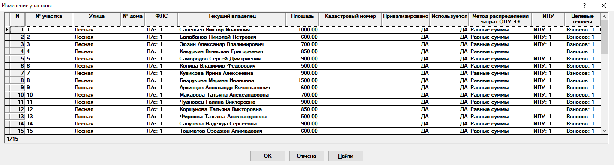

Справочник участков
Данный справочник содержит в себе данные по участкам (рис. 1).

Рис. 1. Справочник участковРассмотрим поля, доступные для заполнения:
-
№ участка - номер участка.
-
Улица - выбирается улица, на которой находится участок. Выбор осуществляется из справочника улиц.
-
№ дома - номер дома. Можно не заполнять.
-
ФЛС - открывает доступ к справочнику финансовых лицевых счетов участка (рис. 3). Узнать подробности вы можете нажав на ссылку.
-
Текущий владелец - указывается Ф.И.О. текущего владельца участка, а также доля собственности и признак расчета. Выбирается из справочника собственников участка (Обязательно к заполнению! Без данных о собственнике расчет по участку не будет производиться).
-
Площадь - площадь участка.
-
Кадастровый номер - кадастровый номер участка.
-
Приватизировано - признак приватизации участка. Используется при расчете земельного налога.
-
Используется - признак использования участка. Используется при расчете сумм начислений.
-
Метод распределения затрат ОПУ ЭЭ - указывается метод распределения затрат по общему прибору учета электроэнергии.
-
ИПУ - открывается справочник индивидуальных приборов учёта по участку.
-
Целевые взносы - данное поле открывает доступ к справочнику целевых взносов участка. В данном справочнике можно добавлять и удалять целевые взносы.
При удалении участка будет предложен перенос данных(ФЛС, ИПУ, взносы, начисления и оплаты) удаляемого участка на один из имеющихся. Если перенос не требуется, то все связанные с участком данные будут удалены безвозвратно.